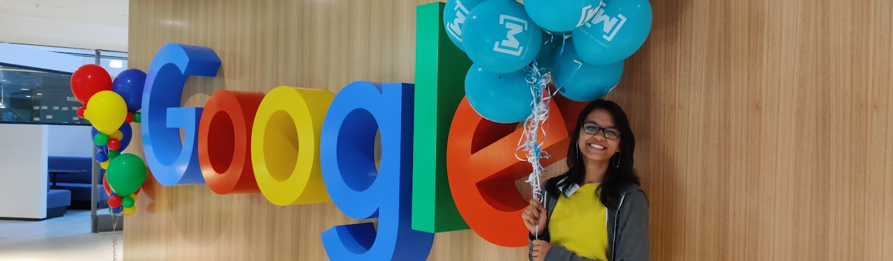

Google Women Techmakers Retreat 2019
Motivation and Journey
(before application)
I applied for WTM scholarship for the first time on 8th August 2018. It was during the application process I realised that I hadn’t done anything significant for the underrepresented community that I had always been so vocal about. Immediately after submitting the application I dropped a text to my college senior who I came to know was extensively involved in uplifting women-in-tech. I met her, and started volunteering in events held by Women Who Code Delhi and Women in Machine Learning and Data Science (WiMLDS) Delhi. Eventually I joined them, organised and delivered a talk, mentored a group of 7 students, and conducted a 4-part lecture series on Machine Learning from an implementation and practical point of view. In the year of 2019, I applied again.
Application Process
In addition to resume, the application asked us for answers to three essay questions that asked us:
• How we became interested in Computer Science and what our goals were in the field.
• Activities we were involved to address challenges faced by the underrepresented groups in CS.
• Technical report on a project we did.
• This time around I was more confident writing answers to these questions. Additionally I got my answers reviewed by a past scholar and a very dear friend.
Suggestion for Essay Answers:
• Know your ‘why’ of applying.
• Give concrete reasons, citing personal examples and try to stay away from cliche phrases.
• Understand your journey and be genuine with what you write.
• Use links as a proof of your words.
Pre-Retreat Experience and Selection Process
I was in Los Angeles, on 27 June 2019, when I received an email from them telling me I had made it through the first round. The next and final round consisted of a telephonic interview with a Googler in a couple of days. Scheduling the call was an eventful task because of the time difference but when the interview finally happened, it was a great 30 minute conversation. It was a casual one-on-one conversation. The conversation started with a ‘Tell-me-about-yourself’ and by the end we were discussing:
• How important organisations and communities are if we are to remove gender disparity
• How to empower women to fight for equal rights in and outside workplaces and how we could not please everybody.
The Googler asked me:
• The community work I was involved in
• how I would keep a women-in-tech organisation afloat
• how I encourage more women to participate and volunteer in the events
• how I respond to guys who condemn these organisations that promote gender equality in STEM fields.
• about my research project at IIT-Delhi and grasped the specifics very quickly
She asked me how and why Women Techmakers was important for me. I told her it would give me an opportunity to connect with fellow scholars who have been doing exceptional work in this domain; would help me to take my regional organisations on a global scale, improving its outreach and learning from the fellow scholars. (After the retreat, I organised our first cross-country webinar with a scholar from Taiwan, something that has never happened in WTM APAC history, as told to me by my country Point Of Contact.) On 11 June 2019 I received an email titled ‘Congratulations! Women Techmakers Scholars Program 2019’. It was 2.11 am Pacific Time and sitting next to a fellow intern from Pakistan, I remember looking at him with bright eyes and simply turning my laptop screen towards him.
Suggestions related to the interview:
• Go through your resume, essay answers and other application material carefully before the interview.
• Prepare answers for the customary questions before (this gives you confidence during your interview if you tend to get nervous for things you’ve been waiting for, like me). The generic questions include:
• “Describe yourself”
• Your technical skills
• Every activity/initiative you are undertaking/have done for the underrepresented community in tech
• Why you? Why wtm?
• What would you do at and after the retreat?
• Do you have any questions for me?
• Most importantly, talk about your journey. Give personal examples, be genuine and honest.
Finally, don’t undersell yourself. Don’t be boastful either. State things you did, without thinking something is too small or too big! Be confident! You got this!
Detail about the retreat is available on my medium blog
FINAL WORDS
The three days were absolutely amazing. I got to interact with some AMAZING Googlers and scholars, ask them questions about their work and talk about my work. It was not only fostering to know it is okay to not know but also to learn to talk about your achievements with pride instead of hiding them or feeling like an imposter. It has been more than a month since the retreat (at the time of writing this blog) and every time I see a post from a fellow scholar, it brings about a smile on my face of all the things they are doing! I am so proud of my girls. I have reached out to my fellow scholars for collaborations and so have they. After a long time it feels so great to be surrounded by people who talk about tech and life and deeply want to bring a change in the position of women and other minorities in the tech field.
If you are eligible, I will definitely suggest you apply! Feel free to reach out to me at shreyagupta0806 [at] gmail [dot] com for any help.
Slides on WTM from an event I presented here. All the best! Thank you Google!
